15. Partial Least Squares (PLS)#
PCA (previous notebook) finds directions of maximum variance in your spectra with no regard for whether that variance actually relates to the property you want to predict (here, glass transition temperature Tg). If the Tg-relevant signal is a small slice of the total spectral variation, PCA might spend its first components on irrelevant variation, needing many components before it stumbles onto the useful ones. PLS finds latent components that simultaneously decompose X and y, maximising the covariance between X scores and y scores — every component it extracts is chosen because it helps predict y, so PLS typically needs far fewer components to reach the same accuracy. See Section 6 of the theory page for how the NIPALS algorithm builds these components one at a time. It excels when X has many (possibly collinear) predictors and few observations.
Two variants are common:
PLS1 — one response variable
PLS2 — multiple response variables
Topics
PLS and PCR algorithm overview
PLSRegression with scikit-learn
Choosing the number of components (cross-validation)
Scores, loadings, and the inner relation
Variable Importance in Projection (VIP)
Case study: predicting polymer Tg from NIR spectra
PCR vs PLS comparison — when they tie, and when PLS actually wins
Interpreting latent components: what PC1 and PLS component 1 each mean
import numpy as np
import pandas as pd
import matplotlib.pyplot as plt
import seaborn as sns
from sklearn.preprocessing import StandardScaler
from sklearn.cross_decomposition import PLSRegression
from sklearn.model_selection import cross_val_predict, KFold
from sklearn.metrics import r2_score, mean_squared_error
from scipy import stats
sns.set_theme(style='ticks', palette='colorblind')
plt.rcParams.update({'figure.dpi': 110, 'font.size': 11})
rng = np.random.default_rng(55)
15.1 Generate NIR Spectral Dataset#
Near-infrared (NIR) spectra for 100 polymer blends (HDPE/PP copolymers).
Each spectrum has 50 wavenumber channels (3000–4000 cm⁻¹).
The response is the glass transition temperature Tg (°C).
The spectra are constructed from five underlying latent spectral profiles so that the data has genuine collinear structure.
n_samples = 100
n_waves = 50
wavenums = np.linspace(3000, 4000, n_waves)
# Five latent spectral profiles (Gaussian bands)
def gaussian(x, center, width):
return np.exp(-0.5 * ((x - center) / width)**2)
profiles = np.column_stack([
gaussian(wavenums, 3100, 60),
gaussian(wavenums, 3300, 80),
gaussian(wavenums, 3500, 50),
gaussian(wavenums, 3700, 70),
gaussian(wavenums, 3900, 55),
]) # shape (n_waves, 5)
# Latent scores (concentrations / composition variables)
C = rng.normal(0, 1, (n_samples, 5))
# Tg depends primarily on latent factors 1 and 3
Tg = (-40 + 15*C[:, 0] - 8*C[:, 1] + 12*C[:, 2]
+ 5*C[:, 3] - 3*C[:, 4]
+ rng.normal(0, 2, n_samples))
# Spectra = profiles × latent scores + noise
X = (C @ profiles.T) + rng.normal(0, 0.05, (n_samples, n_waves))
print(f'X shape: {X.shape}')
print(f'Tg range: {Tg.min():.1f} – {Tg.max():.1f} °C')
# Show a few spectra
fig, ax = plt.subplots(figsize=(8, 4))
for i in range(0, n_samples, 10):
ax.plot(wavenums, X[i], lw=0.8, alpha=0.6)
ax.set_xlabel('Wavenumber (cm$^{-1}$)')
ax.set_ylabel('Absorbance (a.u.)')
ax.set_title('NIR Spectra (every 10th sample shown)')
sns.despine(ax=ax)
plt.tight_layout()
plt.show()
X shape: (100, 50)
Tg range: -90.6 – 15.7 °C
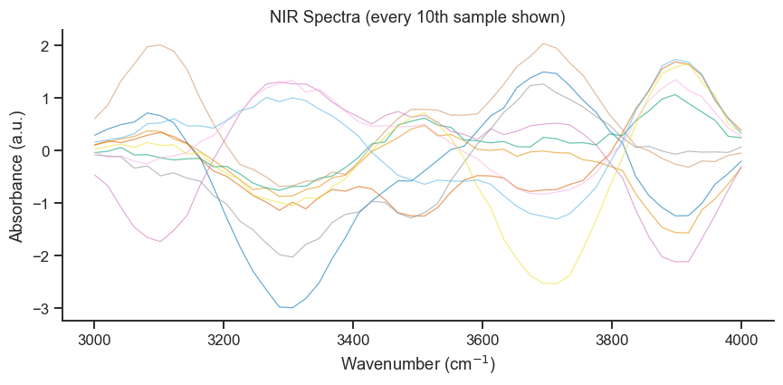
15.2 Choosing the Number of PLS Components#
Cross-validate RMSECV (Root Mean Squared Error of Cross-Validation) as a function of the number of PLS components.
# Standardise X (Tg is already centred implicitly by PLS)
scaler_X = StandardScaler()
X_scaled = scaler_X.fit_transform(X)
max_comp = 12
rmsecv = []
q2 = []
kf = KFold(n_splits=10, shuffle=True, random_state=42)
for nc in range(1, max_comp + 1):
pls_tmp = PLSRegression(n_components=nc, scale=False)
Tg_pred = cross_val_predict(pls_tmp, X_scaled, Tg, cv=kf).ravel()
rmsecv.append(np.sqrt(mean_squared_error(Tg, Tg_pred)))
q2.append(r2_score(Tg, Tg_pred))
opt_nc = np.argmin(rmsecv) + 1
print(f'Optimal number of components: {opt_nc} (RMSECV = {rmsecv[opt_nc-1]:.2f} °C)')
fig, ax1 = plt.subplots(figsize=(7, 4))
ax2 = ax1.twinx()
ax1.plot(range(1, max_comp+1), rmsecv, 'bo-', lw=2, ms=7, label='RMSECV')
ax1.axvline(opt_nc, color='blue', ls='--', alpha=0.5)
ax2.plot(range(1, max_comp+1), q2, 'rs-', lw=2, ms=7, label='Q²')
ax1.set_xlabel('Number of PLS components')
ax1.set_ylabel('RMSECV (°C)', color='blue')
ax2.set_ylabel('Q² (CV R²)', color='red')
ax1.tick_params(axis='y', labelcolor='blue')
ax2.tick_params(axis='y', labelcolor='red')
lines1, labels1 = ax1.get_legend_handles_labels()
lines2, labels2 = ax2.get_legend_handles_labels()
ax1.legend(lines1+lines2, labels1+labels2, fontsize=9)
ax1.set_title(f'PLS Component Selection (optimal = {opt_nc} components)')
sns.despine(ax=ax1)
plt.tight_layout()
plt.show()
Optimal number of components: 5 (RMSECV = 2.13 °C)
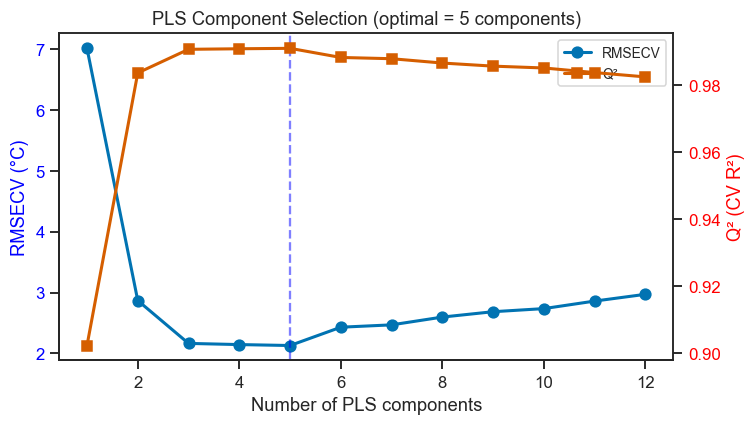
Take-home message
5 components minimise RMSECV at 2.13°C — down from 50 raw spectral channels to 5 latent components, matching the 5 latent spectral profiles the data was actually built from (Section 15.1). That is not a coincidence: PLS’s whole job is finding exactly this kind of compact, Tg-relevant structure hidden inside 50 correlated channels.
Q² rises steeply through the first few components and then flattens — the classic “first minimum” pattern described above. Adding a 6th or 7th component would buy at most a fraction of a degree of extra accuracy while making the model harder to interpret; 5 is the right stopping point by both the RMSECV-minimum and parsimony criteria.
Interpreting the Component Selection Plot#
RMSECV (blue, left axis) — the cross-validated prediction error in the same units as the response (°C here). Choose the number of components at the first minimum or the point where further reduction in RMSECV is marginal (< 5 % improvement).
Q² (red, right axis) — the cross-validated R². A value > 0.5 is acceptable; > 0.8 is good. Q² should be close to the training R²; a large gap indicates overfitting.
Overfitting signal — if RMSECV starts to increase again after the minimum, you have added components that fit noise in the calibration set but do not generalise.
Parsimony principle — prefer fewer components when prediction performance is similar, as simpler models are more robust and interpretable.
15.3 Fit Final PLS Model#
pls = PLSRegression(n_components=opt_nc, scale=False)
pls.fit(X_scaled, Tg)
Tg_pred_train = pls.predict(X_scaled).ravel()
Tg_pred_cv = cross_val_predict(pls, X_scaled, Tg, cv=kf).ravel()
r2_train = r2_score(Tg, Tg_pred_train)
r2_cv = r2_score(Tg, Tg_pred_cv)
rmse_cv = np.sqrt(mean_squared_error(Tg, Tg_pred_cv))
print(f'R² (train) = {r2_train:.4f}')
print(f'Q² (CV) = {r2_cv:.4f}')
print(f'RMSECV = {rmse_cv:.2f} °C')
fig, axes = plt.subplots(1, 2, figsize=(11, 4))
for ax, (Tg_p, label, color) in zip(
axes,
[(Tg_pred_train, f'Calibration R²={r2_train:.3f}', 'steelblue'),
(Tg_pred_cv, f'Cross-val Q²={r2_cv:.3f}', 'crimson')]
):
ax.scatter(Tg, Tg_p, s=30, alpha=0.6, color=color)
lims = [min(Tg.min(), Tg_p.min())-2, max(Tg.max(), Tg_p.max())+2]
ax.plot(lims, lims, 'k--', lw=1.5)
ax.set_xlabel('Measured Tg (°C)')
ax.set_ylabel('Predicted Tg (°C)')
ax.set_title(label)
sns.despine(ax=ax)
plt.suptitle('PLS Model: Predicted vs Measured Tg', fontsize=12)
plt.tight_layout()
plt.show()
R² (train) = 0.9919
Q² (CV) = 0.9910
RMSECV = 2.13 °C
Take-home message
R² (train, 0.992) and Q² (CV, 0.991) sit almost on top of each other — a very small optimism gap, meaning the model is not overfitting the calibration spectra despite having 50 correlated input channels. This is the payoff of choosing components by cross-validated RMSECV in Section 15.2 rather than by training R² alone, which would have kept adding components indefinitely.
RMSECV=2.13°C against a Tg range of roughly −90 to +16°C (about 106°C span) is a relative error of only about 2% of the full range — a genuinely precise calibration, consistent with Tg being strongly and fairly linearly encoded in this synthetic spectral data.
Interpreting the Calibration and Cross-Validation Plots#
Both panels show predicted versus measured Tg. A perfect model would have all points on the dashed 1:1 line.
Calibration (R², blue) — how well the model fits the data it was trained on. This is always optimistic because the model was built on these exact points.
Cross-validation (Q², red) — a far more honest measure of predictive performance. Points that stray far from the 1:1 line in the CV panel are samples the model generalises poorly for.
Systematic curvature — if points form a curve (not a straight line) around the 1:1 reference, the model is missing a nonlinear relationship. Consider adding polynomial terms or increasing the number of PLS components.
Outlier samples — isolated points far from the line in both panels may indicate measurement errors or samples outside the calibration domain.
15.4 Variable Importance in Projection (VIP)#
Each PLS component is a blend of all 50 spectral channels, so it isn’t immediately obvious from the components alone which original wavenumbers actually mattered. VIP re-expresses each variable’s total contribution across all retained components as a single importance score. Variables with VIP > 1 are considered important.
where \(w_{kj}\) is the weight of variable \(j\) in component \(k\) and \(R_k^2\) is the variance explained by component \(k\).
def compute_vip(pls_model, X, y):
"""VIP scores for PLSRegression."""
T = pls_model.x_scores_
W = pls_model.x_weights_
Q = pls_model.y_loadings_
p, h = W.shape
SSY = np.sum((y - y.mean())**2)
SSY_comp = np.array([
np.sum((T[:, k:k+1] @ Q[:, k:k+1].T)**2) for k in range(h)
])
vip = np.sqrt(p * np.sum((W**2) * SSY_comp[np.newaxis, :] / SSY, axis=1))
return vip
vip_scores = compute_vip(pls, X_scaled, Tg)
T = pls.x_scores_ # X scores needed for the scatter plot below
fig, axes = plt.subplots(1, 2, figsize=(12, 4))
# VIP by wavenumber
ax = axes[0]
colors_vip = ['steelblue' if v > 1 else 'lightgray' for v in vip_scores]
ax.bar(wavenums, vip_scores, width=(wavenums[1]-wavenums[0])*0.9,
color=colors_vip, edgecolor='none')
ax.axhline(1, color='red', ls='--', lw=1.5, label='VIP = 1 threshold')
ax.set_xlabel('Wavenumber (cm$^{-1}$)')
ax.set_ylabel('VIP score')
ax.set_title('Variable Importance in Projection (VIP)')
ax.legend()
sns.despine(ax=ax)
# PLS scores plot (T₁ vs T₂)
ax = axes[1]
sc = ax.scatter(T[:, 0], T[:, 1], c=Tg, cmap='RdYlBu_r', s=40, alpha=0.7)
plt.colorbar(sc, ax=ax, label='Tg (°C)')
ax.set_xlabel('PLS Score $T_1$')
ax.set_ylabel('PLS Score $T_2$')
ax.set_title('PLS Score Plot Coloured by Tg')
ax.axhline(0, color='gray', lw=0.5)
ax.axvline(0, color='gray', lw=0.5)
sns.despine(ax=ax)
plt.tight_layout()
plt.show()
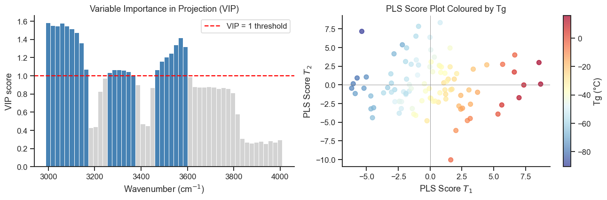
Take-home message
The VIP spectrum isn’t flat noise — it peaks at specific wavenumber bands and drops toward zero between them, tracing out which of the five latent Gaussian bands (Section 15.1) actually carry Tg-relevant information versus which mostly just add spectral bulk.
In the score plot, colour (Tg) shifts smoothly along T₁ — exactly what you’d want from the first PLS component, since by construction PLS chooses T₁ specifically to correlate with y as strongly as possible, unlike PCA’s PC1 which chases X-variance with no regard for Tg at all.
Interpreting the VIP Scores and PLS Score Plot#
VIP bar chart (left)
Spectral channels with VIP > 1 (blue bars) contribute more to the Tg prediction than average and should be prioritised in any reduced model or physical interpretation.
Channels with VIP < 1 (grey) can be removed with little loss of predictive power — useful when building simplified multivariate calibration models.
The positions of the important bands correspond to known NIR absorption modes (e.g. overtones of C–H, O–H, N–H bonds), enabling chemical assignment.
PLS Score Plot (right)
The horizontal gradient from blue to red shows that T₁ captures the dominant variance in Tg. Samples on the right (high T₁ score) tend to have higher Tg.
A second colour gradient along T₂ indicates that the second latent component captures a secondary source of Tg variation, likely related to a different blend composition axis.
15.5 Principal Component Regression (PCR)#
PCR is a two-step procedure:
PCA on X → orthogonal score matrix T (captures X-variance)
OLS regression of y on the first k PC scores
Because PCA maximises X-variance (not X–y covariance), PCR may require more components than PLS when only a small fraction of the spectral variance is related to Tg.
from sklearn.decomposition import PCA
from sklearn.linear_model import LinearRegression
from sklearn.pipeline import Pipeline
# Cross-validate PCR across 1..12 components
rmsecv_pcr = []
q2_pcr = []
for nc in range(1, max_comp + 1):
pcr_pipe = Pipeline([
('pca', PCA(n_components=nc)),
('lr', LinearRegression()),
])
Tg_pred_pcr = cross_val_predict(pcr_pipe, X_scaled, Tg, cv=kf).ravel()
rmsecv_pcr.append(np.sqrt(mean_squared_error(Tg, Tg_pred_pcr)))
q2_pcr.append(r2_score(Tg, Tg_pred_pcr))
opt_nc_pcr = np.argmin(rmsecv_pcr) + 1
print(f'Optimal PCR components: {opt_nc_pcr} (RMSECV = {rmsecv_pcr[opt_nc_pcr-1]:.2f} °C)')
# ── Component selection plot ──────────────────────────────────────────────────
fig, ax1 = plt.subplots(figsize=(7, 4))
ax2 = ax1.twinx()
ax1.plot(range(1, max_comp+1), rmsecv_pcr, 'bo-', lw=2, ms=7, label='RMSECV')
ax1.axvline(opt_nc_pcr, color='blue', ls='--', alpha=0.5)
ax2.plot(range(1, max_comp+1), q2_pcr, 'rs-', lw=2, ms=7, label='Q²')
ax1.set_xlabel('Number of PCR components')
ax1.set_ylabel('RMSECV (°C)', color='blue')
ax2.set_ylabel('Q² (CV R²)', color='red')
ax1.tick_params(axis='y', labelcolor='blue')
ax2.tick_params(axis='y', labelcolor='red')
lines1, labels1 = ax1.get_legend_handles_labels()
lines2, labels2 = ax2.get_legend_handles_labels()
ax1.legend(lines1+lines2, labels1+labels2, fontsize=9)
ax1.set_title(f'PCR Component Selection (optimal = {opt_nc_pcr} components)')
sns.despine(ax=ax1)
plt.tight_layout()
plt.show()
Optimal PCR components: 5 (RMSECV = 2.14 °C)
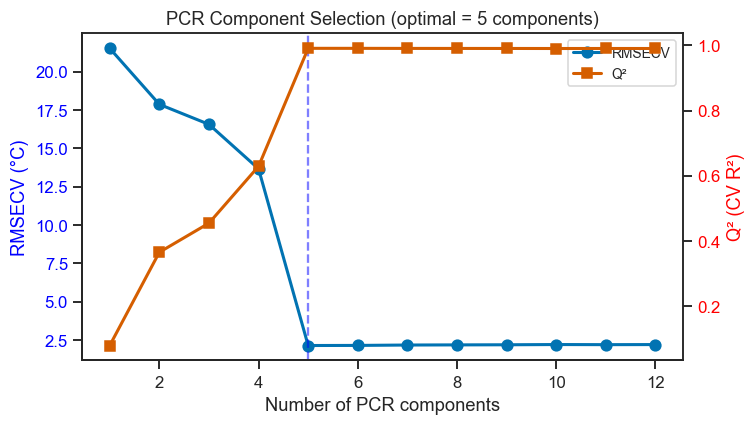
# ── Fit final PCR model ───────────────────────────────────────────────────────
pcr = Pipeline([
('pca', PCA(n_components=opt_nc_pcr)),
('lr', LinearRegression()),
])
pcr.fit(X_scaled, Tg)
Tg_pred_pcr_train = pcr.predict(X_scaled)
Tg_pred_pcr_cv = cross_val_predict(pcr, X_scaled, Tg, cv=kf).ravel()
r2_pcr_train = r2_score(Tg, Tg_pred_pcr_train)
r2_pcr_cv = r2_score(Tg, Tg_pred_pcr_cv)
rmse_pcr_cv = np.sqrt(mean_squared_error(Tg, Tg_pred_pcr_cv))
print(f'PCR R² (train) = {r2_pcr_train:.4f}')
print(f'PCR Q² (CV) = {r2_pcr_cv:.4f}')
print(f'PCR RMSECV = {rmse_pcr_cv:.2f} °C')
fig, axes = plt.subplots(1, 2, figsize=(11, 4))
for ax, (Tg_p, label, color) in zip(
axes,
[(Tg_pred_pcr_train, f'Calibration R²={r2_pcr_train:.3f}', 'steelblue'),
(Tg_pred_pcr_cv, f'Cross-val Q²={r2_pcr_cv:.3f}', 'crimson')]
):
ax.scatter(Tg, Tg_p, s=30, alpha=0.6, color=color)
lims = [min(Tg.min(), Tg_p.min())-2, max(Tg.max(), Tg_p.max())+2]
ax.plot(lims, lims, 'k--', lw=1.5)
ax.set_xlabel('Measured Tg (°C)')
ax.set_ylabel('Predicted Tg (°C)')
ax.set_title(label)
sns.despine(ax=ax)
plt.suptitle('PCR Model: Predicted vs Measured Tg', fontsize=12)
plt.tight_layout()
plt.show()
PCR R² (train) = 0.9918
PCR Q² (CV) = 0.9909
PCR RMSECV = 2.14 °C
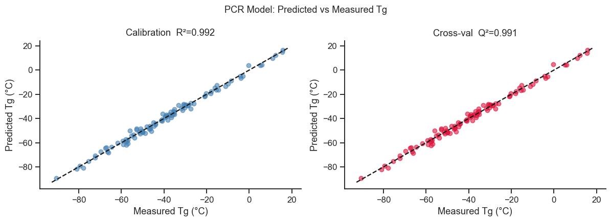
Take-home message
PCR needed the same 5 components as PLS to reach its minimum RMSECV (2.14°C vs. PLS’s 2.13°C) — essentially tied. That is the expected outcome specifically when, as Section 15.5 notes, the Tg-relevant variance and the dominant spectral variance are well-aligned; PCR’s blind-to-y components happened to already point in a Tg-relevant direction here.
Interpreting PCR Results#
PCR maximises X-variance, so the first PC is the direction of greatest spectral variation — which may or may not correlate with Tg.
When the y-relevant variance is a small fraction of total X-variance (common in spectroscopy), PCR needs more components than PLS to find it.
The RMSECV and Q² curves should be compared directly with those of PLS in the next section.
15.6 PLS vs PCR: Side-by-Side Comparison#
This section quantifies the trade-off between the two approaches:
PLS simultaneously decomposes X and y — latent components are biased towards Tg-relevant variance.
PCR decomposes X first (blind to y), then regresses — safer against overfitting but potentially less efficient.
# ── 1. RMSECV curves together ─────────────────────────────────────────────────
fig, axes = plt.subplots(1, 2, figsize=(13, 4))
ax = axes[0]
ax.plot(range(1, max_comp+1), rmsecv, 'b-o', lw=2, ms=7, label=f'PLS (opt={opt_nc})')
ax.plot(range(1, max_comp+1), rmsecv_pcr, 'r-s', lw=2, ms=7, label=f'PCR (opt={opt_nc_pcr})')
ax.axvline(opt_nc, color='blue', ls='--', alpha=0.4)
ax.axvline(opt_nc_pcr, color='red', ls='--', alpha=0.4)
ax.set_xlabel('Number of components')
ax.set_ylabel('RMSECV (°C)')
ax.set_title('Cross-Validated Prediction Error')
ax.legend()
sns.despine(ax=ax)
ax = axes[1]
ax.plot(range(1, max_comp+1), q2, 'b-o', lw=2, ms=7, label='PLS Q²')
ax.plot(range(1, max_comp+1), q2_pcr, 'r-s', lw=2, ms=7, label='PCR Q²')
ax.set_xlabel('Number of components')
ax.set_ylabel('Q² (CV R²)')
ax.set_title('Cross-Validated Q²')
ax.legend()
sns.despine(ax=ax)
plt.suptitle('PLS vs PCR — Component Selection Comparison', fontsize=12)
plt.tight_layout()
plt.show()
# ── 2. Predicted vs actual – both methods ─────────────────────────────────────
fig, axes = plt.subplots(1, 2, figsize=(11, 4))
for ax, (Tg_p, label, color) in zip(
axes,
[(Tg_pred_cv, f'PLS (Q²={r2_cv:.3f}, RMSECV={rmse_cv:.2f}°C)', 'steelblue'),
(Tg_pred_pcr_cv, f'PCR (Q²={r2_pcr_cv:.3f}, RMSECV={rmse_pcr_cv:.2f}°C)', 'crimson')]
):
ax.scatter(Tg, Tg_p, s=30, alpha=0.6, color=color)
lims = [min(Tg.min(), Tg_p.min())-2, max(Tg.max(), Tg_p.max())+2]
ax.plot(lims, lims, 'k--', lw=1.5)
ax.set_xlabel('Measured Tg (°C)')
ax.set_ylabel('Predicted Tg (°C)')
ax.set_title(label)
sns.despine(ax=ax)
plt.suptitle('Predicted vs Measured — Cross-Validation', fontsize=12)
plt.tight_layout()
plt.show()
# ── 3. Coefficient profiles in original variable space ────────────────────────
# PCR regression coefficients in X-space: V_k @ b_lr where V_k are PC loadings
pcr_pca = pcr.named_steps['pca']
pcr_lr = pcr.named_steps['lr']
coef_pcr = pcr_pca.components_.T @ pcr_lr.coef_ # shape (n_waves,)
# PLS regression coefficients in X-space
coef_pls = pls.coef_.ravel() # shape (n_waves,)
fig, ax = plt.subplots(figsize=(9, 4))
ax.plot(wavenums, coef_pls / np.abs(coef_pls).max(), lw=1.8, color='steelblue', label='PLS (normalised)')
ax.plot(wavenums, coef_pcr / np.abs(coef_pcr).max(), lw=1.8, color='crimson', label='PCR (normalised)', ls='--')
ax.axhline(0, color='gray', lw=0.5)
ax.set_xlabel('Wavenumber (cm$^{-1}$)')
ax.set_ylabel('Normalised regression coefficient')
ax.set_title('Regression Coefficients in Spectral Space: PLS vs PCR')
ax.legend()
sns.despine(ax=ax)
plt.tight_layout()
plt.show()
# ── 4. Summary table ──────────────────────────────────────────────────────────
print(f"{'Method':<8} {'Components':>10} {'RMSECV (°C)':>12} {'Q²':>8} {'R² train':>10}")
print('-' * 54)
print(f"{'PLS':<8} {opt_nc:>10} {rmse_cv:>12.2f} {r2_cv:>8.4f} {r2_train:>10.4f}")
print(f"{'PCR':<8} {opt_nc_pcr:>10} {rmse_pcr_cv:>12.2f} {r2_pcr_cv:>8.4f} {r2_pcr_train:>10.4f}")
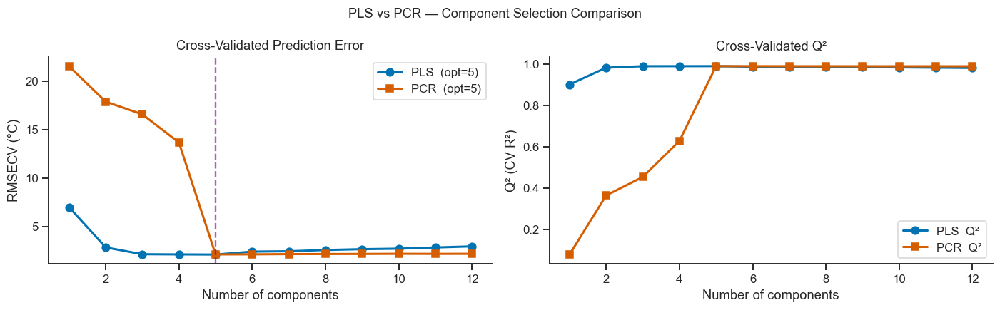
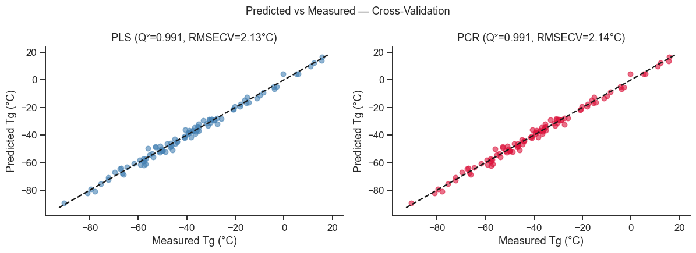
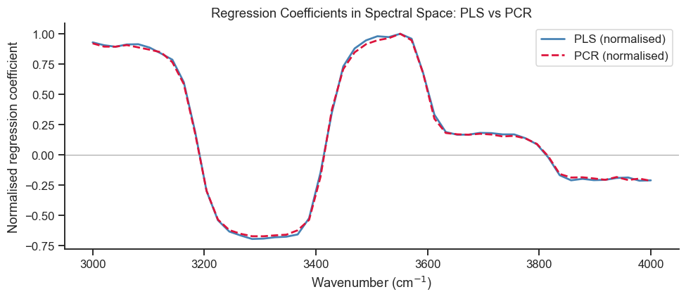
Method Components RMSECV (°C) Q² R² train
------------------------------------------------------
PLS 5 2.13 0.9910 0.9919
PCR 5 2.14 0.9909 0.9918
Take-home message
The head-to-head numbers confirm what Section 15.6’s table predicts in the abstract: PLS (5 components, Q²=0.991, RMSECV=2.13°C) and PCR (5 components, Q²=0.991, RMSECV=2.14°C) are statistically indistinguishable here — a real difference between the methods would show up as a gap in either the number of components needed or the achieved Q², and neither gap is present in this dataset.
This is the case where PLS’s usual advantage (needing fewer components) simply has nothing to bite on, precisely because the latent composition variables driving Tg also happen to dominate the spectral variance overall — don’t generalise “PLS and PCR are basically the same” from this one well-behaved example; Notebook 17 (Live Tutorial 2)’s messier spectra are a better test of when the two genuinely diverge.
Interpreting the Comparison#
Criterion |
PLS |
PCR |
|---|---|---|
Objective |
Maximise X–y covariance |
Maximise X-variance |
Components needed |
Fewer (biased towards y) |
More (may ignore y-relevant PCs) |
Risk of overfitting |
Higher (uses y during decomposition) |
Lower (X decomposition blind to y) |
Regression coefficients |
Can be sparse / physically interpretable |
Spread across more PCs |
Best used when |
Many collinear predictors, y-relevant structure is small fraction of X-variance |
X-variance and y-relevant variance are well-aligned |
Key observations in this NIR example:
Both methods achieve similar Q² because the latent composition variables (which drive Tg) also dominate the spectral variance — the gap between PLS and PCR is small.
In real datasets where Tg-relevant bands are buried under dominant baseline variation, PLS typically requires fewer components and achieves better Q².
The regression coefficient profiles (spectral “fingerprints”) differ in magnitude but highlight similar spectral regions, confirming that both methods find the same chemically meaningful bands.
15.7 When Does PLS Actually Win? A Nuisance-Dominated Example#
Section 15.6’s table lists “y-relevant structure is a small fraction of X-variance” as PLS’s home turf — but the dataset built in Section 15.1 was never actually like that: all five latent factors contribute comparable variance to the spectra, and all five feed into Tg, so the direction of greatest X-variance and the direction most relevant to Tg were never far apart. That is exactly why PCR tied PLS. Real spectra are frequently less generous: NIR and Raman measurements routinely carry large-amplitude physical artifacts — baseline drift, particle-size scattering, detector or illumination variation — that are often the single largest source of spectral variance and have nothing to do with the chemistry you actually care about.
To see the effect this has, we reuse exactly the same chemistry and the same Tg values from Section 15.1 (so nothing about the property being predicted changes) and add one thing: a smooth, large-amplitude baseline term, uncorrelated with Tg by construction.
# A smooth baseline/scatter artifact -- common in real NIR/Raman spectra
# (particle-size scattering, illumination drift), unrelated to Tg by
# construction, with amplitude much larger than the ~1-unit latent scores in C.
baseline_shape = (wavenums - wavenums.mean()) / (wavenums.max() - wavenums.min())
baseline_amp = rng.normal(0, 15, n_samples)
baseline = np.outer(baseline_amp, baseline_shape)
X_ns = X + baseline # same chemistry as Section 15.1, plus a dominant artifact
corr_baseline_Tg = np.corrcoef(baseline_amp, Tg)[0, 1]
print(f'Correlation of baseline amplitude with Tg: {corr_baseline_Tg:.3f} '
f'(should be ~0 -- unrelated by construction)')
fig, ax = plt.subplots(figsize=(8, 4))
for i in range(0, n_samples, 10):
ax.plot(wavenums, X_ns[i], lw=0.8, alpha=0.6)
ax.set_xlabel('Wavenumber (cm$^{-1}$)')
ax.set_ylabel('Absorbance (a.u.)')
ax.set_title('Same Chemistry as Section 15.1, Plus a Dominant Baseline Artifact')
sns.despine(ax=ax)
plt.tight_layout()
plt.show()
Correlation of baseline amplitude with Tg: 0.024 (should be ~0 -- unrelated by construction)
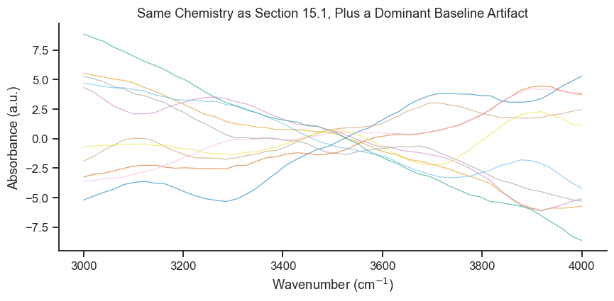
# How much of the X-variance is the artifact, and does PC1 "see" Tg at all?
scaler_ns = StandardScaler()
X_ns_scaled = scaler_ns.fit_transform(X_ns)
pca_check = PCA().fit(X_ns_scaled)
pc1_scores = pca_check.transform(X_ns_scaled)[:, 0]
corr_pc1_Tg = np.corrcoef(pc1_scores, Tg)[0, 1]
print('Variance explained by first 5 PCs:',
pca_check.explained_variance_ratio_[:5].round(3))
print(f'Correlation of PC1 scores with Tg: {corr_pc1_Tg:.3f}')
Variance explained by first 5 PCs: [0.879 0.091 0.014 0.012 0.003]
Correlation of PC1 scores with Tg: 0.067
# Re-run the same component-selection CV loop as Sections 15.2/15.5, now on X_ns --
# search further than max_comp this time, since a dominant nuisance direction
# can push PCR's optimum well past where it landed on the original data.
max_comp_ns = 25
rmsecv_ns, q2_ns = [], []
rmsecv_pcr_ns, q2_pcr_ns = [], []
for nc in range(1, max_comp_ns + 1):
pls_tmp = PLSRegression(n_components=nc, scale=False)
Tg_pred = cross_val_predict(pls_tmp, X_ns_scaled, Tg, cv=kf).ravel()
rmsecv_ns.append(np.sqrt(mean_squared_error(Tg, Tg_pred)))
q2_ns.append(r2_score(Tg, Tg_pred))
pcr_tmp = Pipeline([('pca', PCA(n_components=nc)), ('lr', LinearRegression())])
Tg_pred_pcr = cross_val_predict(pcr_tmp, X_ns_scaled, Tg, cv=kf).ravel()
rmsecv_pcr_ns.append(np.sqrt(mean_squared_error(Tg, Tg_pred_pcr)))
q2_pcr_ns.append(r2_score(Tg, Tg_pred_pcr))
opt_nc_ns = np.argmin(rmsecv_ns) + 1
opt_nc_pcr_ns = np.argmin(rmsecv_pcr_ns) + 1
print(f'PLS optimal components: {opt_nc_ns} (RMSECV = {rmsecv_ns[opt_nc_ns-1]:.2f} °C)')
print(f'PCR optimal components: {opt_nc_pcr_ns} (RMSECV = {rmsecv_pcr_ns[opt_nc_pcr_ns-1]:.2f} °C)')
fig, ax = plt.subplots(figsize=(7, 4))
ax.plot(range(1, max_comp_ns+1), rmsecv_ns, 'b-o', lw=2, ms=6, label=f'PLS (opt={opt_nc_ns})')
ax.plot(range(1, max_comp_ns+1), rmsecv_pcr_ns, 'r-s', lw=2, ms=6, label=f'PCR (opt={opt_nc_pcr_ns})')
ax.axvline(opt_nc_ns, color='blue', ls='--', alpha=0.4)
ax.axvline(opt_nc_pcr_ns, color='red', ls='--', alpha=0.4)
ax.set_xlabel('Number of components')
ax.set_ylabel('RMSECV (°C)')
ax.set_title('Component Selection — Nuisance-Dominated Spectra')
ax.legend()
sns.despine(ax=ax)
plt.tight_layout()
plt.show()
PLS optimal components: 7 (RMSECV = 2.41 °C)
PCR optimal components: 12 (RMSECV = 2.34 °C)
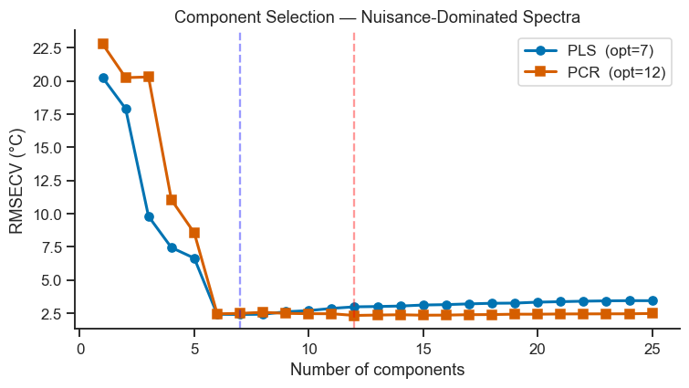
Take-home message
PC1 alone captures 87.9% of the total spectral variance but correlates only 0.067 with Tg — “the direction with the most variance” and “the direction that matters for prediction” turn out to be almost completely different things here, exactly the failure mode PCR is vulnerable to and that Section 15.1’s original dataset was too well-behaved to expose.
PLS reaches its RMSECV minimum (2.41°C) using 7 components; PCR needs 12 — nearly double — to reach its own minimum (2.34°C). Compare both counts to Section 15.6, where the same two methods tied at 5 components each on the original, baseline-free data: that jump (7 and 12, vs. 5 and 5) is entirely the effect of the injected artifact, since Tg and the underlying chemistry never changed.
Notice PCR’s RMSECV (2.34°C) actually ends up marginally lower than PLS’s (2.41°C) despite needing far more components — so the advantage PLS demonstrates here is component economy, not necessarily lower error; given enough components, PCR can eventually reconstruct the useful subspace too. Don’t conflate “needs fewer components” with “is more accurate” — Notebook 17 (Live Tutorial 2), §17.3–17.4, hits the same caveat on a different dataset.
15.8 Interpreting Latent Components: PCR vs PLS#
Is PCR “easier to interpret” than PLS, as is sometimes claimed? Partly — it depends on what question you’re asking a component to answer.
PCA components (PCR) are computed from X alone. PC1 is, by construction, whatever direction captures the most variance in your spectra — full stop, with no reference to Tg or any other property. That makes PC1 generic and reusable: it is the same PC1 whether you go on to predict Tg, density, or nothing at all, and if it happens to line up with a real physical or instrumental phenomenon (a baseline, a scattering effect, a genuine dominant chemical mode), that phenomenon is usually recognisable and physically clean in the loading spectrum. The catch is that “explains the most X-variance” and “matters for the property you care about” are two different claims — Section 15.7 is exactly the case where they come apart, and nothing about PC1 alone tells you which situation you’re in. You have to go check (as that section did, via the PC-score/Tg correlation).
PLS components are computed to covary with y. T₁ is, by construction, whatever direction in X best predicts Tg — so it directly answers “what matters for this prediction,” which is usually the question you actually want answered, and is exactly what VIP scores (Section 15.4) formalise. The catch is the opposite one: T₁ is a blend of whatever combination of spectral features happens to correlate with Tg in this particular calibration set, which can mix together several distinct physical phenomena into one component, is specific to Tg (a different response measured on the same spectra would generally produce a different T₁), and — because it uses y during the decomposition itself — is more prone to fitting noise in a small calibration set than a PCA component ever can be.
The plot below makes this concrete on the nuisance-dominated data from Section 15.7: PC1’s loading and PLS’s first-component weight, side by side, with the five true chemical band centres marked.
# Fit both models on the nuisance-dominated data at their own optimal component counts
pca_ns = PCA(n_components=opt_nc_pcr_ns).fit(X_ns_scaled)
pls_ns = PLSRegression(n_components=opt_nc_ns, scale=False).fit(X_ns_scaled, Tg)
pc1_loading = pca_ns.components_[0]
t1_weight = pls_ns.x_weights_[:, 0]
band_centers = [3100, 3300, 3500, 3700, 3900] # true chemical bands from Section 15.1
# Quantify what each component 1 actually tracks: the injected baseline shape,
# or the bands that Section 15.1 built Tg's largest terms from (profile 1 @3100,
# profile 3 @3500 -- coefficients +15 and +12, the two largest in Tg's formula)
r_pc1_baseline = np.corrcoef(pc1_loading, baseline_shape)[0, 1]
r_pc1_band1 = np.corrcoef(pc1_loading, profiles[:, 0])[0, 1]
r_t1_baseline = np.corrcoef(t1_weight, baseline_shape)[0, 1]
r_t1_band1 = np.corrcoef(t1_weight, profiles[:, 0])[0, 1]
r_t1_band3 = np.corrcoef(t1_weight, profiles[:, 2])[0, 1]
print(f'PC1 loading vs baseline shape: r = {r_pc1_baseline:+.3f}')
print(f'PC1 loading vs band @3100 (profile 1): r = {r_pc1_band1:+.3f}')
print(f'T1 weight vs baseline shape: r = {r_t1_baseline:+.3f}')
print(f'T1 weight vs band @3100 (profile 1): r = {r_t1_band1:+.3f}')
print(f'T1 weight vs band @3500 (profile 3): r = {r_t1_band3:+.3f}')
fig, axes = plt.subplots(1, 2, figsize=(12, 4))
for c in band_centers:
axes[0].axvline(c, color='lightgray', ls=':', lw=1, zorder=0)
axes[0].plot(wavenums, pc1_loading, color='steelblue', lw=1.8)
axes[0].axhline(0, color='gray', lw=0.5)
axes[0].set_xlabel('Wavenumber (cm$^{-1}$)')
axes[0].set_ylabel('PC1 loading')
axes[0].set_title(f'PCR: PC1 loading ({pca_ns.explained_variance_ratio_[0]*100:.0f}% of X-variance)')
sns.despine(ax=axes[0])
for c in band_centers:
axes[1].axvline(c, color='lightgray', ls=':', lw=1, zorder=0)
axes[1].plot(wavenums, t1_weight, color='crimson', lw=1.8)
axes[1].axhline(0, color='gray', lw=0.5)
axes[1].set_xlabel('Wavenumber (cm$^{-1}$)')
axes[1].set_ylabel('$T_1$ weight')
axes[1].set_title('PLS: component 1 weight (chosen to covary with Tg)')
sns.despine(ax=axes[1])
plt.suptitle('What Does "Component 1" Actually Look At? (dotted lines = true chemical bands)',
fontsize=12)
plt.tight_layout()
plt.show()
PC1 loading vs baseline shape: r = +0.905
PC1 loading vs band @3100 (profile 1): r = -0.519
T1 weight vs baseline shape: r = +0.187
T1 weight vs band @3100 (profile 1): r = -0.060
T1 weight vs band @3500 (profile 3): r = +0.796
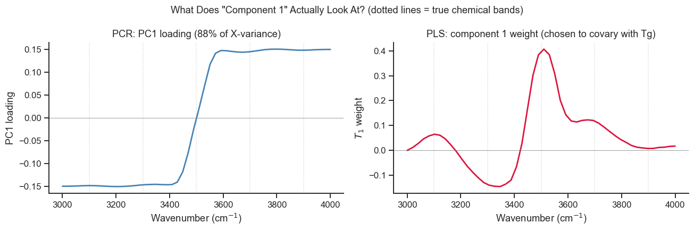
Take-home message
The numbers confirm the plot: PC1’s loading correlates strongly with the injected baseline shape (r=+0.905) and only moderately — and in a direction that doesn’t reflect its variance ranking — with the genuinely Tg-relevant band at 3100 cm\(^{-1}\) (r=−0.519). Chemically, PC1 is mostly an artifact.
T1’s weight does the opposite: it barely touches the baseline (r=+0.187) or the 3100 cm\(^{-1}\) band (r=−0.060), but strongly tracks the 3500 cm\(^{-1}\) band (r=+0.796) — the other large-coefficient term in Tg’s true formula (Section 15.1). T1 isn’t “cleaner” in some abstract sense; it is specifically built to line up with whatever in X predicts Tg, and here that happens to be the 3500 cm\(^{-1}\) band.
Neither component isolates a single physical cause perfectly — both are blends, exactly as the discussion above predicts. The practical difference is what each blend is biased toward: PC1’s dominant ingredient is the artifact you’d have to explicitly rule out before trusting it; T1’s dominant ingredient is already the property-relevant chemistry. That PC1 doesn’t cover the 3100 cm\(^{-1}\) band either is exactly why PLS needed 7 components (not 1) to do the job properly — VIP scores (Section 15.4), which pool across all retained components, are the tool built for seeing the full picture rather than reading too much into component 1 alone.
Should You Always Use PLS?#
No. The two examples in this notebook bracket the honest answer:
Situation |
Prefer |
Why |
|---|---|---|
y-relevant variance is a small fraction of total X-variance (Section 15.7’s baseline case; often true of real NIR/Raman) |
PLS |
PCR wastes early components on variance that has nothing to do with y; PLS ignores it by construction. |
X-variance and y-relevance are well-aligned (Section 15.1’s original case) |
Either |
Both reach the same accuracy with the same number of components — PLS has nothing to win here. |
You need components that mean the same thing across several different responses, or want a first, purely exploratory look at X (batch effects, outliers, instrument drift) before committing to any one property |
PCR / plain PCA |
PCA components don’t depend on which y you eventually model; PLS components are re-derived, and can change shape, for every new response. |
Small sample size, many collinear predictors, and overfitting risk is your main worry |
PCR, or PLS with conservative, CV-chosen components |
PCA’s decomposition step cannot use y, so it cannot fit noise in y the way a PLS decomposition in principle can — Notebook 17 (Live Tutorial 2) §17.3–17.4 is a real instance where PCR’s held-out test score edged out PLS’s despite PLS needing fewer components. |
You need to explain which spectral regions matter for the property to a chemist |
PLS, read via VIP (Section 15.4) |
That is literally the question PLS components are built to answer; a PCR loading may or may not be relevant to y at all, as Section 15.8’s plot shows directly. |
The practical habit worth taking from this notebook: fit both, look at how many components each needs and what their leading components actually look like (as Sections 15.6–15.8 did), and only then decide which one you trust — rather than picking one algorithm as a house style and assuming its answer is automatically the right one.
Exercises#
PLS2 — multiple responses: Add a second response (e.g. Young’s modulus) that depends on latent factors 2 and 4. Fit a
PLSRegressionwith two response columns. Compare the Q² for each response vs PLS1.PLS vs MLR: Fit an ordinary MLR using all 50 spectral channels as predictors. Does it converge? Why? What happens if you use only the 10 channels with the highest VIP scores as MLR predictors?
Concentration residuals: A common NIR QC tool is the X-residuals: the part of the spectrum not captured by the PLS model. Compute them as
X_res = X_scaled - pls.x_scores_ @ pls.x_loadings_.T. Plot the sum of squared residuals per sample and identify any outlier spectra.Nuisance amplitude sweep: Repeat Section 15.7 for several baseline amplitudes (
rng.normal(0, a, n_samples)forain, say,[0, 2, 5, 10, 15, 25]), recordingopt_nc_nsandopt_nc_pcr_ns(and each method’s best RMSECV) at every amplitude. Plot components-needed vsafor both methods. At roughly what amplitude does PCR start needing visibly more components than PLS? Does PLS’s RMSECV change much across the sweep — should it, given how PLS is supposed to behave?Which PC is the real signal? For the nuisance-dominated dataset (
X_ns_scaled), compute the correlation of each of the first 8 PCA scores individually with Tg (not just PC1, as Section 15.7 did). Which PC number is the first to show a strong correlation? Then fit a PCR model using only that single PC as the predictor — how does its RMSECV compare to the full, CV-optimal PCR model from Section 15.7? What does this tell you about the difference between “PCR needs more components” and “PCR ignores the useful information entirely”?Interpretability under the original (aligned) dataset: Repeat Section 15.8’s PC1-vs-T1 loading comparison, but on the original
X_scaled/pls/pcrfrom Sections 15.1–15.6 instead of the nuisance-dominated data. Are the two loading spectra now more similar to each other than they were in Section 15.8? Relate your answer to why Section 15.6 found PLS and PCR essentially tied on this dataset.